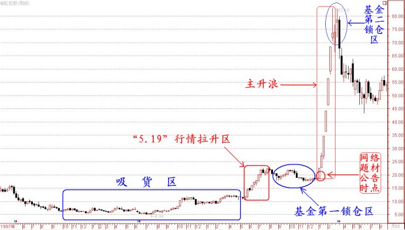

第183篇•教你炒股系列47:主升浪的成因（5）
谷为陵
第三，我举一个上市公司公告利好后，庄家强行将股价拉高到超出该利好估值的、难以想象的高位的案例。
这类庄股的运作手法与前面所讲的两类庄股不同，前面所讲的纯资金推动型庄股以及先拉高后出利好型庄股，它们的共同特点是在没有任何利好的情况下，庄家自己必须动用巨额拉升资金先将股价拉高，也就是说，拉升股价的艰巨任务是落在了庄家自己的头上，别人是不会帮忙的。这很考验庄家的实力，没有实力的庄家是没有办法做到这一点的。
另外，在庄家将股价拉到高位后，庄家到底能否顺利出货，还是一个未知数，因为即使有利好，庄家在股价高位有时候也难以出货，这还要看当时股市运行的情况，以及市场炒作热点情况而定。若股市高亢，且该庄股符合市场热点炒作范围，那么，庄家出货就较容易，反之，则较困难，甚至不能出货。也就是说，由于股市瞬息万变，那些依靠纯资金推动的庄股，以及先拉高后出利好的庄股，都有可能面临在将股价拉高后，由于市场情况发生变化而出现难以出货的问题，庄家要面临很多的不确定性。事实上，在庄家时代，就有很多庄家是因为碰到了这个问题而最终夭折的。
怎样解决这个不确定性问题呢？大致有两个解决方案：
一是在庄家吸完货，且将股价拉高到成本价之上后，就让上市公司公告利好题材，在有利好题材后，肯定会出现很多的追涨盘，庄家可借着这个利好题材顺势拉高，边拉边看股市和盘面情况。若股市运行和盘面情况对自己有利，就多拉高一些，若股市运行和盘面情况对自己不利，就少拉高一些，以达进可攻，退可守之境，应付裕如。
二是庄家找到一些大机构，主要是基金能够在股价高位进行锁仓。所谓锁仓，就是庄家将自己控制的筹码倒给其它机构，让其持股不动，庄家得以将该部分倒出去的股票变现。有人会问，其它机构难道是傻子吗，怎么会在股价高位为庄家接盘呢？俗话说“有钱能使鬼推磨”，只要庄家给钱，就能够找到这样的机构。当然，这样的机构不能是拿着自己的钱的大户和民营企业，一定是拿着别人钱的资金管理者，如，某些国企的资产管理公司、财务公司、投资公司的资金负责人，公募基金经理，某些阳光私募基金经理等。庄家许诺给予这些资金管理者高额的“锁仓费”，视股票股价高度和风险不同，“锁仓费”有很大的差别。一般是按照每股给1～5元钱不等，即，若帮庄家锁仓1000万股，那么，该资金管理者就可得到庄家支付的1000～5000万元“锁仓费”，“锁仓费”全部是现金支付。这个诱惑当然很大，所以，在当年的庄家时代，庄家只要敢出高额的“锁仓费”，就不愁找不到锁仓者。在这种情况下，找到实力机构进行锁仓，就成了庄家出货的一种典型方法。我这不是给大家讲故事，而是在叙述历史，凡是经历过那个时代的人，应该都知道。
其实，庄家在找锁仓盘的时候，并非需要将所有股票都给锁仓者，这是庄家不可能做到的，庄家只需要将其持有的20%～25%左右的股票倒给锁仓者就可以了。为什么呢？因为对于一只股价涨幅在4～5倍的庄股来说，庄家在股价高位倒出20%的仓位，就基本上就能够将其吸货的本金收回了。
在锁仓时，庄家不一定会让资金管理者都在股价高位锁仓，庄家可以让资金管理者先在股价主升浪启动前锁一部分仓，待股价拉到高位后再锁一部分仓，这样做有两个好处：一是能够让资金管理者的持仓成本降低，避资因股票价格大跌后，锁仓资金市值损失过大，资金管理者将面临较大个人追责风险；二是能够让资金管理者的锁仓行为看起来更加合情合理，因为资金管理者已经在股价主升浪启动前“买进了”一部分，且很快就赚钱了，那么，资金管理者在股价高位的“再锁仓”行为，他可以解释为是因为继续看好该股，只不过最终是看走眼了，最多算是投资失误而已。
假若庄家将以上两种方法都采用的话，那么，庄家一定会将利好题材的效用发挥到极致，并将股价炒到难以想象的高度。我给大家举一个真实的著名案例。
案例3：上市公司出利好后，庄家疯狂拉高，基金再高位锁仓案例——海虹控股
我上文提到，在2000年的网络科技股行情里，海虹控股是一只超级大牛股。1999年的“5.19”行情开启了网络科技股时代，绝大部分庄家也是在“5.19”行情后才进场的，但是，海虹控股的庄家却早1998年年中的时候就进场吸货了。这在海虹控股的K线图上很容易看出来。1998年7月至1999年5月，上证指数是大跌的，从1400点跌到了1000点，但在此期间，海虹控股的股价却逆市从1998年7月的4.94元最低价，逐波上涨到了11元多。客观的说，若没有“5.19”行情，海虹控股的庄家很难出货，会很难受。但该庄家的命是在太好了，在将海虹控股股价拉到11元多后，“5.19”行情井喷而来，助该庄家再次发力将股价拉到了20元以上。
我算了一下，该庄家控盘度应该在90%以上，因为当时海虹控股还是ST股，股票根本没人要，庄家想吃多少就可吃进多少，庄家的总持仓成本在8元左右。在该庄家将股价拉高到20元后，该庄家应该是获利超过一倍了。在此情况下，庄家是可以选择卖出变现的。但后来的情况证明，该庄家不仅没有在此区间选择出货，而且，还更进一步，采取了更为激进的操作手段——将股价继续大幅拉高！
庄家之所以如此大胆，有两个原因：一是海虹控股因收购联众游戏而成为了“正宗”的网络概念股，题材貌似很大，股价还有较大上升空间；二是该股的庄家说动了基金在股价拉高后锁仓，解决了庄家在股价高位难以出货的后顾之忧。在能够看到更多的暴利的情况下，谁会放弃这个机会呢？
于是，我们就看到了海虹控股股价极为疯狂的一面，在2000年1月初至3月初的2个月时间里，该股股价竟然连续拉出了27个涨停板（其中26个5%的涨停板，1个在摘掉ST帽子后的10%的涨停板），股价从18元径直暴涨到83元！
下面是该股1997年6月初至2000年8月的周K线图：

（未完待续）